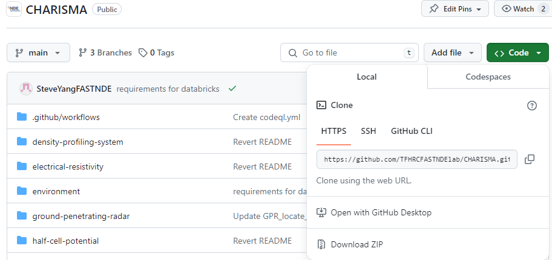

Anaconda
Please visit our GitHub website to download the packages: https://github.com/TFHRCFASTNDElab/CHARISMA
Click the green “Code” button and “Download ZIP” to download CHARISMA.
{kind=link}
We recommend using Anaconda to simplify the environment setup. Anaconda is commonly used for managing Python packages in user-defined environments. In other words, it allows you to create isolated environments for different projects, each with its own set of dependencies, without interfering with the system-wide Python installation. This is particularly useful in data science and scientific computing where projects may have different requirements and dependencies. First, download Anaconda by clicking the image below.
We recommend installing our conda environment charisma-env to run the code properly. This environment has all the dependencies from our entire code. Open Anaconda Prompt, and go to your download directory by typing the following command.
cd C:/your_download_path/
To create and activate charisma-env with conda, run the following command:
conda env create -f charisma-env.yml
conda activate charisma-env
After creating and activating the charisma-env environment, specify the environment and install (or launch) Jupyter Notebook from Anaconda Navigator to use our CHARISMA Python package.
Lastly, import the notebook (ipynb) file in the CHARISMA notebook directory and revise the directory path to run the code.